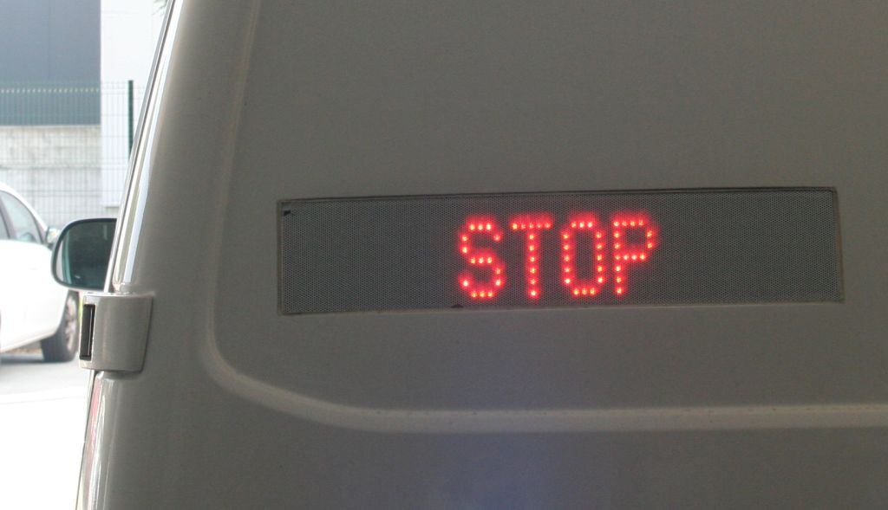

Policija poziva vse, ravnajte odgovorno!
Spričo pozivov k današnjemu nedovoljenemu protestnemu shodu policisti vse pozivamo k odgovornemu ravnanju. Svetujemo vam, da se ne zbirate na javnih krajih in na nedovoljenih shodih.